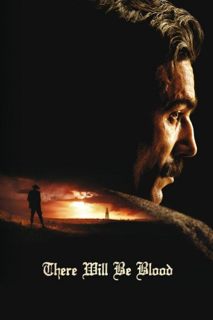
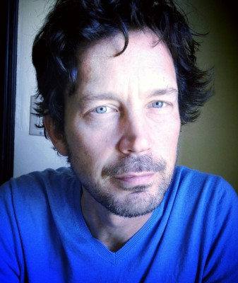

#1273 There Will Be Blood
Auszeichnungen: 2 Oscars gewonnen für 6 Oscars nominiert 1 GoldenGlobes gewonnen 1 BAFTA-Awards gewonnen
 
 IMDB-Wertung: 8.1 / 10
IMDB-Wertung: 8.1 / 10  IMDB-TOP-Platzierung: 155
IMDB-TOP-Platzierung: 155  Metascore: 93
Metascore: 93 
Daniel Plainview (Daniel Day-Lewis) versucht Ende des 19. Jahrhunderts sein Glück als Schürfer auf der Suche nach Silber doch er entdeckt bei der harten Arbeit eines Tages eine Ölquelle. Für den nur auf Profit eingestellten Einzelgänger erschließt sich eine neue Obsession und schon bald beginnt er seine Arbeit im Ölgeschäft. Schon früh kommt sein Partner zu Tode, woraufhin Daniel sich dessen Sohnes annimmt, der als Waise zurück blieb. Doch auch diesen Schritt wählt Daniel nur um sich Vorteile zu erschleichen und so steigt er durch Rücksichtslosigkeit, Betrug und harte eigene Arbeit zu einem schwerreichen Ölbaron auf. Sein Ziehsohn H.W. (Dillon Feasier) dagegen verliert sein Gehör bei einem Unfall an der Ölpumpe. Im Laufe der Jahre wächst Daniels Vermögen und mit ihm sein grenzenloser Hass auf die Menschen…
Jahr: 2007
Dauer: 158 Minuten
FSK: 12
Land: USA Studio: Paramount VantageTonspuren: DTS - ,
Untertitel:
Auflösung: 1080p (1920x800) Größe: 14438 MB
Genre: Drama
Regisseur:  Paul Thomas Anderson
Paul Thomas Anderson
Drehbuch: Paul Thomas Anderson, Upton Sinclair
Soundtrack: Jonny Greenwood
Darsteller:
 Daniel Day-Lewis als Daniel Plainview
Daniel Day-Lewis als Daniel Plainview-  Barry Del Sherman als H.B. Ailman
 Paul F. Tompkins als Prescott
Paul F. Tompkins als Prescott- Dillon Freasier als HW
 Kevin Breznahan als Signal Hill Man
Kevin Breznahan als Signal Hill Man Jim Meskimen als Signal Hill Married Man
Jim Meskimen als Signal Hill Married Man- Randall Carver als Mr. Bankside
 Paul Dano als Paul Sunday / Eli Sunday
Paul Dano als Paul Sunday / Eli Sunday Ciarán Hinds als Fletcher
Ciarán Hinds als Fletcher- David Willis als Abel Sunday
- Hope Elizabeth Reeves als Elizabeth
 Kevin J. O'Connor als Henry
Kevin J. O'Connor als Henry David Warshofsky als H.M. Tilford
David Warshofsky als H.M. Tilford- Charles Thomas Doyle als J.J. Carter
- Colleen Foy als Adult Mary Sunday
- Russell Harvard als Adult HW
 Brad Carr als Signal Hill Man , uncredited
Brad Carr als Signal Hill Man , uncredited- Kathryn A Davis als Village girl , uncredited
- Rhonda Reeves als Elizabeth's Mother , uncredited
- Beau Smith als Blacksmith , uncredited
- Martin Stringer als Silver Assay Worker
- Matthew Braden Stringer als Silver Assay Worker
- Jacob Stringer als Silver Assay Worker
- Joseph Mussey als Silver Assay Worker
- Harrison Taylor als Baby HW
- Stockton Taylor als Baby HW
- Erica Sullivan als Signal Hill Woman
- Coco Leigh als Mrs. Bankside
- Sydney McCallister als Mary Sunday
- Christine Olejniczak als Mother Sunday
- Kellie Hill als Ruth Sunday
- James Downey als Al Rose
- Dan Swallow als Gene Blaize
- Robert Arber als Charlie Wrightsman
- Bob Bell als Geologist
- David Williams als Ben Blaut
- Joy Rawls als Eli Follower
- Louise Gregg als Eli Follower
- Amber Roberts als Eli Follower
- John W. Watts als Oil Worker
- Robert Caroline als Oil Worker
- Barry Bruce als Oil Worker
- Irene G. Hunter als Mrs. Hunter
- John Chitwood als Little Boston Doctor
- Colton Woodward als William Bandy
- John Burton als L.P. Clair
 Hans Howes als Bandy
Hans Howes als Bandy- Robert Barge als Bartender
- Ronald Krut als Standard Oil Man
- Huey Rhudy als Standard Oil Man
Datei: X:\2007(N-Z)\There Will Be Blood (2007, FSK12, 1920x800).mkv seit 13.06.2015
Festplatte: HD 2007(A-Z)-2008(A-F)
 Es gibt insgesamt 56 Filme in der Gruppe '2007(N-Z)'
Es gibt insgesamt 56 Filme in der Gruppe '2007(N-Z)'